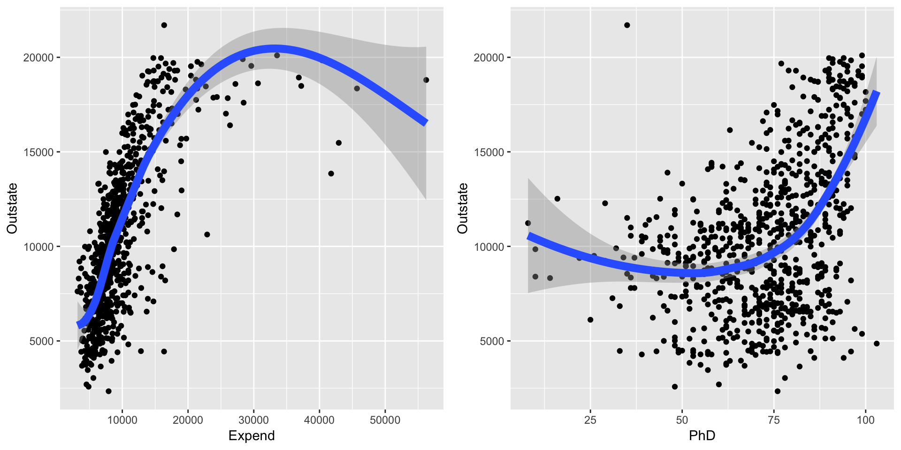
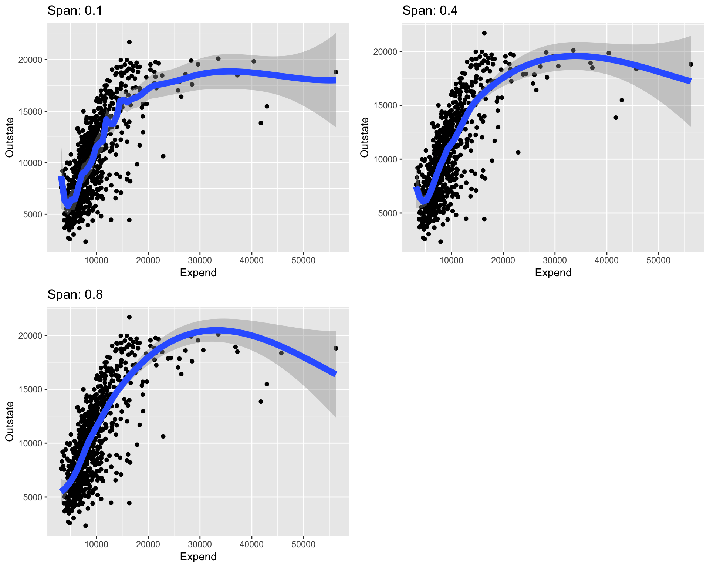
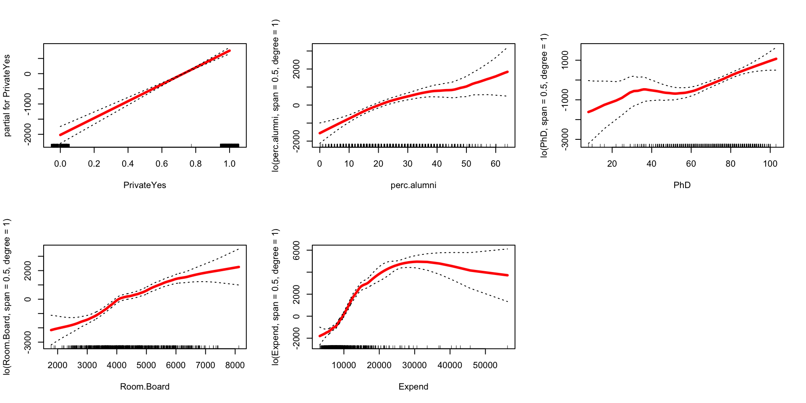
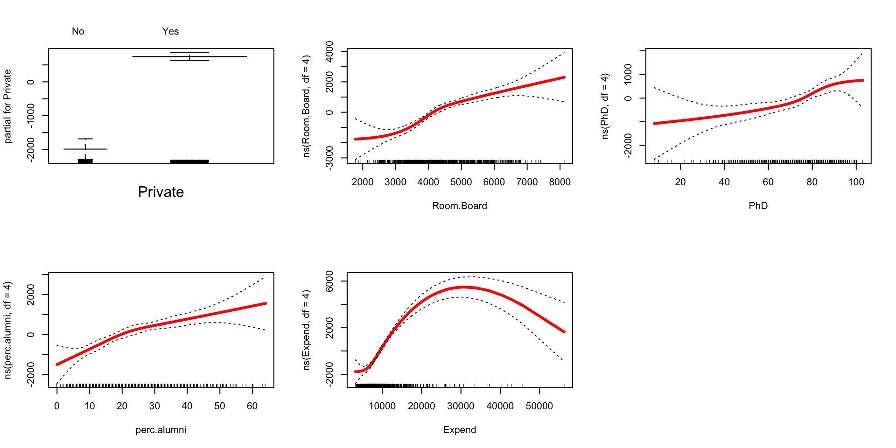

Topic 9 Local Regression and GAMs
9.1 Discussion
Local regression
- Main tool: LOESS = locally estimated scatterplot smoothing
- Fit local linear regression models, using only a subset of the data
- How is this different from KNN regression?
## `geom_smooth()` using method = 'loess' and formula 'y ~ x'
## `geom_smooth()` using method = 'loess' and formula 'y ~ x'
Generalized additive models
Instead of assuming linear relationships between predictors and the response…
\[\text{Outstate} = \beta_0 + \beta_1\text{Private} + \beta_2\text{PhD} + \beta_3\text{Expend} + \varepsilon\]
…let’s be more general and say that the relationships can be arbitrary functions:
\[\text{Outstate} = \beta_0 + f_1(\text{Private}) + f_2(\text{PhD}) + f_3(\text{Expend}) + \varepsilon\]
- If the functions \(f_1, f_2, f_3\) can be described with splines, then the model is just like an ordinary linear regression model and can be fit with least squares.
- We can also have these functions be described with LOESS functions.
9.2 Exercises
- Writing pseudocode for LOESS
Pseudocode is an algorithm in words. Write pseudocode for the LOESS algorithm assuming that you are supplied the predictor \(x\), response \(y\), a span of 0.4. Your algorithm will use local linear fits. Assume that ordinary least squares rather than weighted least squares is used.
Start from the following:- Set up a grid of \(x\) values from the minimum to maximum \(x\)
- For each \(x\) in the grid:
- Step 1
- Step 2…
The LOESS tuning parameter
When you usegeom_smoothinggplotthe smooth line is drawn by LOESS by default. The main tuning parameter we modify isspan. Thespangives the percent of data used in the local linear fit.ggplot(College, aes(x = Expend, y = Outstate)) + geom_point() + geom_smooth(span = 0.1, lwd = 3) + labs(title = "Span: 0.1") ggplot(College, aes(x = Expend, y = Outstate)) + geom_point() + geom_smooth(span = 0.4, lwd = 3) + labs(title = "Span: 0.4") ggplot(College, aes(x = Expend, y = Outstate)) + geom_point() + geom_smooth(span = 0.8, lwd = 3) + labs(title = "Span: 0.8")- Put
spanon our bias-variance tradeoff diagram along with labels for bias, variance, complexity, and flexibility. - How would you expect a plot of test RMSE versus
spanto look? Why?
- Put
GAMs
We can fit GAMs in R by installing thegampackage. Withincaret, we can specifygamLoessfor the method. We specify two values for thespantuning parameter: 0.4 and 0.5. We also have to say the degree of the local polynomial that we’re fitting in each small window: degree=1 for a linear fit.library(caret) set.seed(2019) gam_mod <- train( Outstate ~ Private + Room.Board + PhD + perc.alumni + Expend, data = College, method = "gamLoess", tuneGrid = data.frame(span = c(0.4, 0.5), degree = 1), trControl = trainControl(method = "cv", number = 10), metric = "RMSE", na.action = na.omit )You can plot each LOESS component by calling the
plot()function on thefinalModelcomponentgam_mod. (This is the model with the best set of tuning parameters.) This will produce a sequence of 5 plots, each illustrating a different smooth \(\hat{f}_i(x_i)\) that describes how out-of-state tuition changes with that predictor, holding constant the other predictors. The dotted lines show 2 standard errors.
That is, pick any 2 points on a plot. The difference in \(y\) values gives the change in out-of-state tuition associated with the change in \(x\) values, holding constant the other predictors.par(mfrow = c(2,3)) # Set up a plot grid with 2 rows and 3 cols plot(gam_mod$finalModel, se = TRUE, col = "red", lwd = 3) # lwd = line width
- Pick 1 or 2 of these plots and interpret your findings in context. Anything surprising or interesting?
If instead of LOESS representations for the 4 quantitative variables, we wanted spline representations, we can fit a least squares model with spline terms. We can then view the spline components using
plot.Gam()from theGAMpackage.library(gam) # Load for plot.Gam() spline_mod <- lm(Outstate ~ Private + ns(Room.Board, df=4) + ns(PhD, df=4) + ns(perc.alumni, df=4) + ns(Expend, df=4), data = College) par(mfrow = c(2,3)) plot.Gam(spline_mod, se = TRUE, col = "red", lwd = 3)
How do the spline and LOESS components compare?
Note: If you want to read about how GAMs are fit, you can read about the backfitting algorithm in ISLR Section 7.7. When we want LOESS representations for the individual predictor functions, backfitting must be performed. Backfitting can sometimes run into computational issues but is fine most of the time. Least squares is more stable overall, and we can use least squares if we want spline representations of the individual predictor functions. The decision making point is whether we want spline or LOESS representations.
9.3 How to choose between methods?!?
We’ve covered many tools. Let’s unpack their pros and cons in different settings as well as some ideas that will carry on as we talk about classification.
Ordinary linear regression
| GAMs and LOESS
| |
| | KNN
<---|-------------------------------------|------------|------->
parametric nonparametricKNN regression
- I introduced KNN as a means of introducing the idea of nonparametric methods. The idea of nonparametric methods is going to carry through to classification, coming up next!
- Pros:
- KNN is a nonparametric method, which might be preferable if we don’t believe that a parametric model, such as a linear regression model (even with spline terms), holds or if we don’t want to assume a parametric model. How to check? Revisit our regression assumptions! Fit a model with the potential predictors, and look at diagnostic plots.
- Cons:
- Look back at the video to visualize the functions learned by KNN for different values of K. Even with large K, the function learned looks “blocky” and has sharp angles. Thus, KNN doesn’t look smooth until we increase K a lot, but at that point, we might suffer from too much bias in the bias-variance tradeoff.
- The curse of dimensionality. This curse may seem kind of odd in that, normally, we want a lot of predictors. But as we’ve seen having a lot of predictors, makes distances between cases potentially quite large, rendering the nearest neighbors to a case actually quite dissimilar. But we can save ourselves in two ways:
- Much bigger sample size! Sometimes this is feasible.
- Reduce dimensionality! The technique of dimension reduction is an unsupervised learning technique that combines existing predictors into a smaller set of predictors. We’ll talk about a technique called PCA later in the semester.
Splines
- Pros:
- Splines pretty nicely cover all sorts of nonlinear trends and are computationally very attractive because spline terms fit exactly into a least squares linear regression framework. Least squares models are very easy to fit computationally.
- Cons:
- Splines are still under the umbrella of a parametric model, because we assume the form \(y = \beta_0 + \beta_1 x_1 + \cdots + \beta_p x_p\). Really, this is a tiny con. Splines are capable of being quite flexible given enough knots. In this sense, splines are pretty nonparametric even though they outwardly take on a parametric-looking form.
- It is possible to create multidimensional splines by creating interactions between spline terms for different predictors. This suffers from the curse of dimensionality like KNN because we are trying to estimate a wavy surface in a large dimensional (many variable) space where data points will only sparsely cover the many many regions of the space.
LOESS
- Pros:
- I find LOESS very interpretable. At each test case, a local linear model is fit, which fits well with the idea that if you zoom enough into any function (no matter how curvy), you’ll see a line.
- LOESS is a popular way to see smooth trends on scatterplots, which is why
ggplotuses it ingeom_smooth().
- Cons:
- If there are a lot of data points, fitting a LOESS over the entire range of the predictor can be slow because so many local linear regressions must be fit.
We can avoid this if we don’t actually need the fit over the entire range. If we want to just make a prediction about the response for a test case, we only need to fit the local regression at the x value for that test case.
- If there are a lot of data points, fitting a LOESS over the entire range of the predictor can be slow because so many local linear regressions must be fit.
GAMs
- Whether the indvidual functions within a GAM are represented with LOESS or splines, the models are still generally called GAMs. But when you describe your model, you should say whether you are using a LOESS or spline representation
- Pros:
- GAMs have the interpretability of linear regresson models (relationships for one predictor hold constant the other predictors), and they also flexibly model nonlinearity.
- Cons:
- GAM still make the assumption that you add up the individual functions of the predictors (linear combination of the functions). (Why add? Why not a product or quotient?) Still, this additivity allows for its interpretability, which is a definite plus.